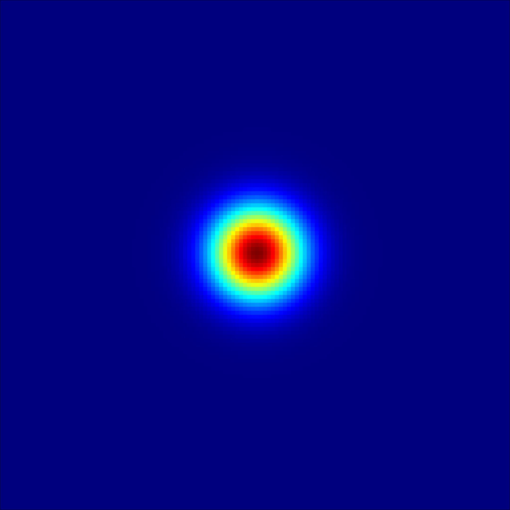

Quick Start
In this quick start example, we will demonstrate how to set up a simple Gross-Pitaevskii problem and solve it using the GeneralizedGrossPitaevskii package. As a first example, we will simulate free propagation of a wavefunction in a 2D grid. Later, we will add a nonlinear term in order to have a proper Gross-Pitaevskii equation.
Free Propagation
We first load a few necessary packages.
using GeneralizedGrossPitaevskii, CairoMakie, StructuredLightCairoMakie and StructuredLight are used for visualization.
The first step is to define the parameters of the grid of our simulation. We will simulate a 2D system with a grid with N x N points with size of L x L.
N = 128
L = 8;Now we define a lengths parameter:
lengths = (L, L);This is a tuple that defines the physical dimensions of the simulation domain. Each element corresponds to the size of the grid in each dimension. As we will be simulating a 2D system, and the grid is square, both elements are equal.
Now, we turn to the definition of the initial condition of the wavefunction.
The first step is to define the inter-point distance in the grid:
ΔL = L / N;This is used to create a range of points in the grid.
rs = StepRangeLen(0, ΔL, N);Observe that this package always assumes that the grid is of the form 0, ΔL, 2ΔL, ..., (N-1)ΔL. This is easily created with the StepRangeLen function.
We can use this grid to create an initial condition for the wavefunction:
initial_condition = [exp(-(x - L / 2)^2 - (y - L / 2)^2) for x in rs, y in rs];This creates a 2D array representing a Gaussian wavefunction centered at the middle of the grid.
Let us visualize the initial condition:
visualize(abs2.(initial_condition))
As this package is able to handle systems with multiple wavefunctions, we need to wrap the initial condition in a tuple with one element:
u0 = (initial_condition,);This indicates that we have one wavefunction in our simulation.
Next, we need to specify the equation that our system obeys. As this is a free propagation problem, the wavefunction satisfies the Schrödinger equation i ∂u(r, t)/∂t = -∇²u / 2. In Fourier space, this corresponds to a dispersion relation D(k) = |k|² / 2, which we now define:
dispersion(ks, param) = sum(abs2, ks) / 2;The extra argument param is a placeholder for additional parameters, such as mass, that may be needed in more complex problems, but is not used here.
Now we can create the problem instance:
prob = GrossPitaevskiiProblem(u0, lengths; dispersion);This encapsulates all the necessary components to define the Gross-Pitaevskii equation.
Now that we have defined the problem, we can solve it. We just need to specify some additional parameters: This is the algorithm we will use to solve the problem:
alg = StrangSplitting();Right now, this is the only algorithm implemented in this package, so there isn't much choice.
This algorithm uses a fixed time step, which we can define:
dt = 0.01;Next, we define the time span of the simulation:
tspan = (0, 1);This indicates that we want to simulate the system from time t=0 to t=1
Now, we indicate how many times we want to save the solution during the simulation:
nsaves = 64;Finally, we can solve the problem:
ts, sol = solve(prob, alg, tspan; nsaves, dt, show_progress=false);The solve function returns two values: the time points ts on which the solution was saved and the solution sol. sol is again a tuple, where each element corresponds to a wavefunction in the simulation. Each element in this tuple is an array with one extra dimension than the initial condition, which corresponds to the time dimension. We can use the save_animation function (which comes from StructuredLight and CairoMakie) to visualize the solution:
save_animation(abs2.(sol[1]), "free_prop_example.mp4");Gross-Pitaevskii Equation
We will now add a nonlinear term to the equation, which will make it a proper Gross-Pitaevskii equation: i ∂u(r, t)/∂t = -∇²u / 2 + g|u|²u where g is a coupling constant that defines the strength of the nonlinearity.
To add this nonlinear term, we need to define a new function that takes the wavefunction and returns the nonlinearity term (only the g|u|² part. Check GrossPitaevskiiProblem for more information.)
nonlinearity(u, param) = param.g * abs2(u[1]);Here, we have used the param argument to pass the coupling constant g. We define this argument as a named tuple:
param = (; g=-6);The negative value of g indicates that we have an attractive nonlinearity, which will be clear in the visualization. Now we can create a new problem instance with the nonlinearity:
prob = GrossPitaevskiiProblem(u0, lengths; dispersion, nonlinearity, param);We used the same initial condition, lengths, and dispersion as before, but now we have added the nonlinearity and the parameters.
Just as before, we can solve the problem and visualize the solution:
tspan = (0, 0.4)
ts, sol = solve(prob, alg, tspan; nsaves, dt, show_progress=false);
save_animation(abs2.(sol[1]), "gross_pitaevskii.mp4");The attractive nonlinearity will cause the wavefunction to collapse into a localized structure, which can be seen in the animation.
This page was generated using Literate.jl.